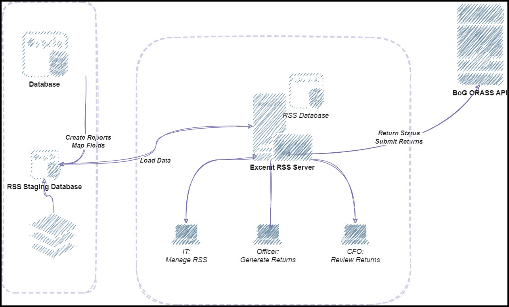
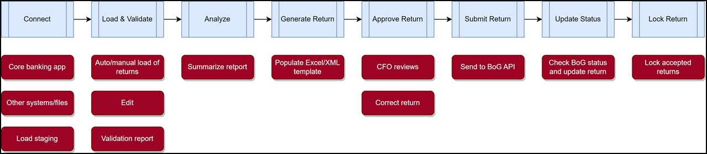

System Overview & Features
Excenit RSS automates the submission of ORASS returns to BoG for all financial institutions, including banks. On this page, we provide an overview of the salient features of the system and the requirements for effective implementation and operation.
Excenit RSS is an end-to-end solution that manages all aspects of the return submission, including extracting the data from the core banking application database (and other sources), validating the data to meet BoG rules, formatting the data to conform to BoG requirements, generating the final returns, and submitting the returns directly to the ORASS API. In addition, Excenit RSS includes analytic tools – interactive dashboards and pivot tables – for reviewing data and measuring performance, a set of workflow tools for reviewing returns, and a secure system for ensuring that only authorized persons can access and use the system.
System Requirements
Table 1 shows the minimum hardware and software requirements to for Excenit RSS. The table includes the requirements for three environments – the RSS application server, the staging database, and the end user. These requirements can be exceeded to improve performance.
| Feature | Application Server | Staging Database | Application Database | End User |
|---|---|---|---|---|
CPU |
X64 Processor |
Intel i5+, AMD, M1+ |
||
Intel Xeon with Intel EM64T support |
||||
AMD Opteron |
||||
RAM |
16GB |
16GB |
32GB |
8GB |
OS |
Windows Server 12+ |
Microsoft Windows 10+ |
||
Ubuntu 18.04LTS+ |
Ubuntu 14+ |
|||
Mac OS X+ |
||||
Storage |
500GB (SSD) |
2TB (SSD) |
2TB (SSD) |
250GB (SSD/HDD) |
Database |
— |
PostgreSQL 12+ |
— |
|
Oracle Database 12c+ |
||||
Microsoft SQL Server 2012+ |
||||
MySQL Database |
||||
Other Software |
Apache Tomcat 9+ |
— |
Microsoft Excel 2013+ |
|
Microsoft Edge |
||||
Google Chrome |
||||
Basic Architecture
Excenit RSS implements a simple architecture that connects seamlessly with the client’s environment. The final environment is configurable and revolves the seven key processes outlined in Figure 1.
RSS comprises six key systems and servers as shown in Figure 2:
-
Core Banking Application Database — this is the primary data source, which will contain data needed for returns.
-
Other Systems — systems that contain other information including human resources, accounting (if not using the core banking application), flat files, among others.
-
RSS Staging Database — a database that holds data extracted from the core banking application database and other source systems.
-
RSS Application Database –- a database that holds final data for returns.
-
RSS Application Server — an Apache Tomcat server, which hosts the application and manages the entire process.
-
BoG ORASS API — the source for information on returns and submission of pending returns.

These systems connect to each other to create a fully functional Excenit RSS system. The servers identified in Figure 2 need not be physical computers. A virtualized environment provides similar performance. In addition, while not encouraged, some systems can share resources. For example, the RSS database can be located on the application server.
Key RSS Features
RSS has several key modules, which are loosely-coupled yet, provide a seamless end-to-end automation experience.
-
ETL process
-
Data loading/report preparation
-
Data validation
-
Return generation
-
Return submission
-
API
-
Workflow
-
Analytics
-
Messaging
-
Security
These modules together provide the complete automated return submission experience from Excenit.

Extract, Transform, and Load with Data Mapping
A key feature of the Excenit RSS is building an ETL process to automate data collection from various sources. The ETL process is central to Excenit RSS and typically requires the most effort. The ETL process maps the data elements from primary sources to the BoG format. The primary source is the core banking database. We recognize that not all data elements required for the ORASS returns reside in the core banking application, therefore during development, we collaborate with owners of key systems to identify and prepare data from other sources.
-
Developing parameterized queries to connect to data sources. The parameterized query ensures that RSS can extract only the data needed for a return. For example, for January 2022 MAFI returns, the end date which is defined in the BoG ORASS system as 31st January 2022, will be passed as a parameter to the query, ensuring that only data for that period are extracted from the source system into the staging database.
-
Developing queries with internal data extraction rule and criteria. To match the format specified by BoG, Excenit collaborates with the report owners (typically the Finance and technology teams) to identify business rules to map data from source to BoG formats.
-
Testing results of queries frequently and thoroughly to ensure that all returns are accurate.
Data Loading/Report Preparation
When returns are due to BoG, officers can either load the returns manually (with a single click) or configure returns to execute automatically (without human intervention) when due.
-
RSS loads data by triggering the ETL to retrieve data from the core banking system database to the staging database, matching BoG’s data template which is then loaded to the application.
-
RSS allows a manual file for upload either a whole return pack or individual sheets in the return pack.
-
On some returns, users can edit values that have been loaded. However, it is important that the returns are re-validated whenever there are manual edits to the data. By default, manual edits to returns
Data Validation
Validation is a key feature of Excenit RSS, which includes all BoG specified rules for data elements through a custom rules engine, which is updated to reflect changes to BoG specifications when necessary. Excenit implements validation during the ETL development and during return loading. Excenit RSS
-
validates data for each field in each record against BoG validation rules in the data loading process,
-
provides a detailed validation report for errors and warnings review, it does this for individual sheets in a return type, validation report can also be downloaded in an Excel format.
During the initial ETL development, Excenit collaborates extensively with the client team to correct problems identified during validation. Data cleaning is a major task that requires significant resources from the client. Excenit encourages clients to clean data from source, although it is possible to make corrections in the staging environment. Subject to contractual requirements, Excenit can assist with data cleaning.
Report Generation
Excenit RSS populates the BoG return templates (Microsoft Excel or XML) with data that validated. Reports generated and submitted for approval.
Return Submission
Upon approval, RSS submits returns to BoG as scheduled. The system administrator configures the frequency, it can wait for a defined time set to send report to BoG. Rejected returns must be revalidated and regenerated. RSS monitors BoG’s API for status changes to submitted returns. It must be noted that current limitations with BoG’s API means errors and warnings in returns must be retrieved manually from the ORASS portal. The deployment process ensures that the likelihood of rejection is eliminated.
API
Excenit RSS is tightly integrated with BoG’s ORASS API. This means all return parameters are retrieved from the API. Specifically, Excenit RSS
-
Periodically connect to BoG’s ORASS API to retrieve pending returns,
-
Uses information on pending returns to initiate the ETL process (optional),
-
Notifies relevant users of pending returns,
-
Submits approved returns to BoG, and
-
Updates status of return using data from BoG’s ORASS API.
Workflow
Excenit RSS includes a customizable workflow engine to ensure all returns are approved by appropriate authorities before submission to BoG. By design, no return is submitted without approval. The RSS API only flags a return for submission after approval. The workflow also ensures that, returns that have been submitted to BoG are locked to prevent unauthorized edits. The workflow ensures that the status of each return is tracked and updated from when the returns are due to BoG up to submission. The Excenit RSS workflow implements other controls over returns. For example, when a return is pending BoG approval, they cannot be edited. If a return needs to be resubmitted, the CFO or an authorized representative will have to explicitly unlock it for edits to be made.
At a minimum, RSS requires three (3) users with distinct roles to have it fully functioning. RSS comes predefined with the role rules which can easily be assigned to a user once created:
-
Administrator: Configures RSS out of box, has full unrestricted access to RSS.
-
Report Manager: Loads data, review data, review validation report, generates report and submits report for approval.
-
CFO: Reviews data, can also review validation report, download a generated report, approve or decline report, dashboard access for activities on returns, pass comments on a report.
Analytics
Excenit RSS includes built-in tools to analyze return data, particularly for MAFI and MBK returns. The analytic tools include interactive dashboards and interactive pivot tables, which users can use to generate summaries from the data. Specifically,
-
RSS comes out of the box with inbuilt interactive analytical and dashboard tools.
-
RSS provides executives with dashboards for activities on return, like return due date and return submission date, and other parameters that might be useful for executive decision-making, including key performance indicators.
-
Dashboards and analytic tools are customizable to meet specific client needs.
Messaging
At every stage of the return submission process, Excenit RSS notifies users about the status of the returns and other activities. For example, when new returns are due to BoG, the responsible officers will be notified. Similarly, during return processing, approvers are notified when returns have been prepared and due for review and approval.
To enhance RSS workflow processes, RSS allow mailing configuration like private internal SMTP parameters to be used or a public SMTP server.
An email is sent to the appropriate identity in the workflow process for every core RSS functionality triggered.
Security
Excenit RSS follows strict data governance protocol to ensure that data is safe, secure and free from manipulation.
-
Restricted User Access – Access to Excenit RSS is role-based and fine-grained, which means application administrators can restrict user access to only the parts of the software they need.
-
Tamper-proof Audit Log – Excenit RSS logs all user-changes to return data loaded from the staging database into the RSS database.
-
Secured Data Transmission – Excenit RSS is a web application, which is deployed with industry standard security. All communications are encrypted via a Secure Sockets Layer (SSL) certificate.
Business Continuity
Excenit RSS includes an automated backup and recovery tools that ensure point in time recovery (PITR) of the application database. In addition, completed returns, which are by default saved to the application server are backed up to an external location and the application database. To recap, the application database contains completed returns, data for generating returns, and system configuration settings.